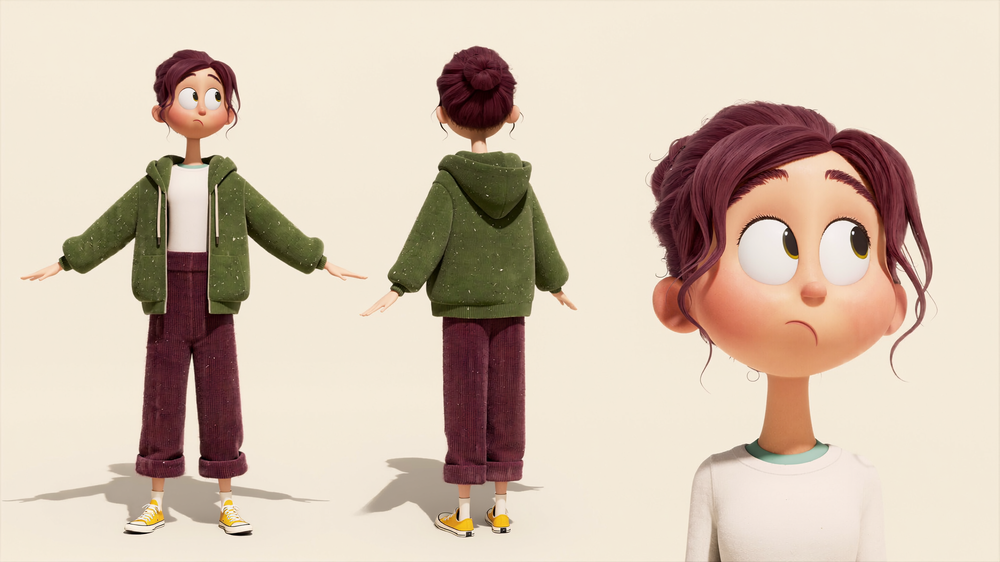

Eddie & the Quokka Gang
에디와 쿼카 갱 · Original AI Animation Series · 기획
낮에는 세상에서 가장 행복한 동물,
밤에는 섬을 뒤집어 놓는 힙합 갱스터.
관광객 앞에선 언제나 웃는 쿼카들. 밤이 되면 섬을 뒤집는 힙합 갱스터가 된다. 그 정체를 목격한 신입 관리인 에디는 시설 복구를 위해 이들과 내키지 않는 비밀 거래를 시작한다.
기획의도
“귀엽게 생겼다고, 성격까지 귀여울까?”
쿼카는 ‘세상에서 가장 행복한 동물’로 불린다. 그 사랑스러운 얼굴 뒤에 전혀 다른 성격과 생활이 숨어 있다면? 귀여운 쿼카와 자유분방한 힙합 갱스터 문화를 결합해 외형에서 비롯된 고정관념을 유쾌하게 뒤집고, 서로 다른 규칙으로 사는 에디와 쿼카 갱이 충돌하고 협력하며 만들어 내는 웃음과 공존을 경쾌하게 그린다.
핵심 매력
언제나 웃는 얼굴의 쿼카가 사실은 다른 동물들이 두려워하는 갱스터.
섬을 관리할 책임은 인간에게, 섬에 대한 정보는 쿼카에게. 서로의 필요로 협상하는 버디 코미디.
음악·패션·댄스 배틀로 사건이 생기고, 캐릭터별 음악 콘텐츠와 굿즈로 확장된다.
타깃
귀여운 동물의 반전, 과장된 액션, 음악과 춤을 즐기는 시청자.
힙합 문화를 즐기고, 새 환경에서 인정받고 싶은 사회 초년생.
세계관
호주 로트네스트섬. 낮엔 관광지, 밤엔 ‘지베이 갱’이 인간의 물건으로 아지트와 공연장을 만든다.
인간은 동물의 말을 알아듣지 못한다. 인간에게 귀여운 쿼카 갱은 다른 동물들에게 두려움의 대상.
시가처럼 만 잎말이, 철통 보안의 잎 농장, 잎 거래. 갱스터 소품처럼 보이지만 그냥 맛있는 먹이.

Eddie — character turnaround
캐릭터
질서를 지키려는 신입 관리인과 자유와 위엄을 추구하는 쿼카 보스. 둘 다 ‘인정받고 싶은’ 주인공 — 같은 욕망, 정반대의 방식.
에디 Eddie
신입 섬 관리인
제발 오늘 하루만 아무 일 없이 지나가면 안 될까?

로코 Rocco
지베이 갱의 보스
난 귀여운 게 아니라 무서운 거라고!

픽스 Fix
작전 설계 담당
계획대로만 하면 완벽해. 이론적으로는.

덩크 Dunk
행동대장
부수면 되는 거죠, 보스?

리프 Riff
DJ · 발명가
잠깐, 이걸로 소리 한번 만들어 볼까?
EP.01 첫 출근부터 정전?!
에디가 부임한 날 밤, 쿼카 갱이 철망과 전기 부품으로 파이트 링과 공연 장치를 만든다.
아침까지 정전을 복구해야 하는 에디. 배전함 앞에서 거들먹거리는 로코가 원인을 안다는 걸 눈치챈다.
로코는 특별한 잎을 대가로 요구하고, 에디는 갱이 가져간 부품을 되찾는다.
전기가 돌아오고 갱은 다시 귀여운 쿼카로. 안도하는 에디 앞에 로코가 대가를 요구한다.
시즌 1
로코와의 비밀 동업이 시작된다.
조직을 과시하려는 로코의 대규모 공연 소동.
픽스의 작전이 덩크의 의욕으로 엉망이 된다.
아지트를 지키려던 행동이 다른 동물들을 구한다.
로코가 유독 못 건드리게 하는 장소.
갱의 공연과 섬의 공식 행사가 겹치며 대혼란.
제작 · 확장
AI 영상 생성 + 3D 캐릭터·배경 + 편집. 캐릭터 디자인과 배경을 고정해 반복 제작 가능한 파이프라인.
콘셉트 영상 → 파일럿 → 일관성·효율 검토 → 정규 에피소드.
캐릭터별 숏폼 힙합 뮤직비디오, 음악 콘텐츠, 굿즈, 새로운 호주 동물과 라이벌 조직.
분홍산이 간질간질
AI 크리에이터 쇼케이스 · 영상부문
AI 크리에이터 쇼케이스 영상부문 출품작.
[기획의도 · 작품 설명을 여기에 작성해 주세요]
Baking the Ocean
3D Motion Graphic · C4D / Octane
뜨거운 오븐 안, 메론빵과 소라빵이 부풀어 오르며 무언가 특별한 변화가 시작된다.
일상의 작은 사물이 상상력을 통해 새로운 생명을 얻고, 평범한 공간이 환상적인 세계로 변해가는 순간을 표현했다. 메론빵은 거북이가 되어 헤엄치고, 오븐 속은 산호초가 자라는 바다가 된다.


Style frames · Kitchen detail · Storyboard
Sun-Dried
선드라이드 · Where the Sun Was Born · 3D Motion Graphic
아기 얼굴을 한 태양이 세탁기에서 태어난다.
세탁 후 따뜻한 햇빛 아래 빨래를 말린 듯한 산뜻함을 전하기 위해, 햇살처럼 포근하고 상쾌한 세탁의 순간을 감각적인 비주얼로 표현했다.


AM 10:30 · AM 10:55 · AM 11:07